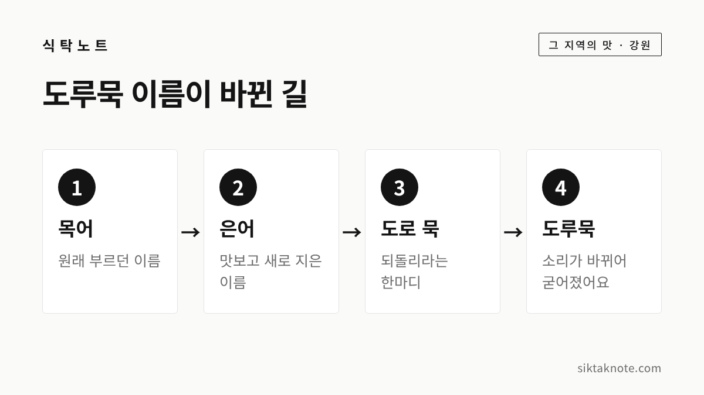
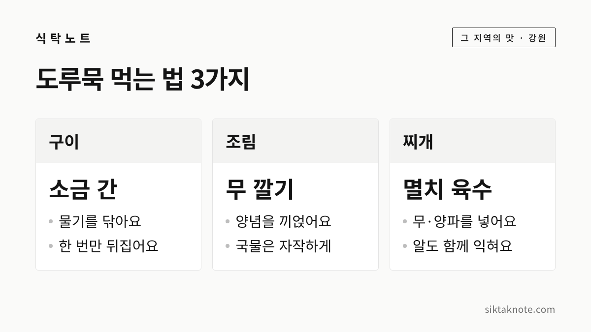

도루묵 이야기 — '말짱 도루묵'의 유래와 동해안 먹는 법 3가지

3줄 요약
- '말짱 도루묵'은 임금이 피난길에 맛본 생선의 이름을 바꿨다가 도로 되돌렸다는 이야기에서 나왔다고 전해져요.
- 어느 임금이었는지는 자료마다 달라서, 선조라는 설 말고도 고려 왕이나 인조라는 이야기가 있습니다.
- 올해는 속초에서 11월 6일부터 15일까지 도루묵·양미리 축제가 열리고, 알배기 도루묵은 구이·조림·찌개로 많이 먹어요.
행사 정보
- 행사
- 제17회 속초 도루묵·양미리 축제
- 기간
- 2026년 11월 6일(금)~15일(일)
- 장소
- 속초항 항만 부지 (이마트 인근)
- 내용
- 도루묵·양미리 직거래 판매, 먹거리장터, 무료 시식, 당일 시세 안내와 가격 표시 점검
- 주최
- 속초시수산업협동조합 (주관: 속초시청호자망협회)
2026.11.12 확인 기준. 속초시 등 공식 안내 페이지는 열어 보지 못했고, 기사 두 건으로 확인했습니다. 일정과 장소는 바뀔 수 있으니 가시기 전에 속초시 안내를 한 번 더 확인해 주세요. 양양 등 다른 지역의 올해 도루묵 행사는 확인하지 못했어요.
올해도 도루묵철이 돌아왔어요
찬바람이 불면 동해안에서 반가운 생선이 올라오는데요. 바로 도루묵입니다. 강원특별자치도 해양수산국이 10월 28일부터 11월 3일까지 집계한 동해안 도루묵 어획량은 13톤이었다고 합니다. 같은 기사에 따르면 이 숫자는 2주 전의 4톤과 비교해 세 배 이상이에요.
오늘은 '말짱 도루묵'이라는 말이 어디서 나왔는지부터 시작해서, 도루묵이 어떤 물고기인지, 올해 소식은 어떤지, 집에서 먹는 법 세 가지와 보관 요령까지 차례로 이야기해 보겠습니다.

'말짱 도루묵', 이야기의 시작
애써 한 일이 아무 소용이 없게 되었을 때 "말짱 도루묵"이라고 하죠. 이 말에는 생선 이야기가 숨어 있는데요. 이투데이 기사는 임진왜란 때 선조가 피난길에 동해에서 난 생선을 맛보고 맛있다며 '은어'라고 부르게 했다고 전합니다. 한양으로 돌아온 뒤 같은 생선을 다시 올리자 예전 맛이 아니어서 "도로 묵이라 하라"고 했고, 그 말이 '도로 묵'을 거쳐 '도루묵'이 되었다는 이야기예요. 기사도 이 내용을 전설로 소개합니다.

서울신문 기사에서는 원래 이름이 목어(木魚)였고, 임금이 맛이 좋다며 은어(銀魚)로 고치게 했다가 나중에 "도로 목어라 불러라" 했다고 전합니다.

어느 임금이었을까, 엇갈리는 이야기
그런데 이 이야기에 나오는 임금이 누구인지는 자료마다 조금씩 달라요. 한국민족문화대백과사전은 정조 때 이의봉이 엮은 『고금석림』에 고려의 왕이 동쪽으로 피난했을 때 목어를 먹고 은어라 고쳐 부르게 했다는 이야기가 실려 있다고 설명합니다. 환도한 뒤 다시 먹어 보니 맛이 없어 목어로 되돌리라고 했고, 그것이 '환목(還木)', 곧 도루묵이 되었다고 해요. 조재삼의 『송남잡지』에도 같은 유래가 전한다고 합니다.
대백과에는 또 다른 이야기도 나옵니다. 인조가 이괄의 난 때 공주로 피신하던 중 있었던 일이라는 전설이 있고, 원래 이름이 맥어(麥魚)였다가 은어로 바뀌고 다시 환맥어가 되었다는 이설도 있다고 해요. 위키트리 기사에는 태조 이성계, 선조, 인조 등 임금이 누구였는지를 두고 설이 분분하다고 나옵니다. 그 기사는 허균의 『도문대작』에 실린 민담에서 나왔다는 설도 함께 전하는데, 저희가 원문은 확인하지 못했어요.
이야기를 모아 보면 '임금이 이름을 바꿨다가 도로 되돌렸다'는 줄거리는 같지만 임금은 선조, 고려 왕, 인조로 갈립니다. 역사적 사실이라기보다 오래 전해 내려온 이야기로 읽어 주시면 좋겠습니다.

도루묵은 어떤 물고기일까
대백과에 따르면 도루묵은 몸길이가 25~26cm쯤 되는 바닷물고기이고, 몸이 가늘고 길며 비늘과 옆줄이 없습니다. 평소에는 수심 100~400m의 모래진흙 바닥에서 지내다가 산란기인 초겨울에 해조류가 무성한 얕은 곳으로 모여든다고 해요. 동해안 중부 이북에 많다고 설명합니다.
서울신문과 위키트리 기사는 산란기를 11~12월로 소개하고, 알을 품은 알배기는 11월부터 제철이라고 전합니다.

올해 동해안 도루묵 소식
다시 강원도 주간 어획 동향으로 돌아가 볼게요. 위키트리 기사는 해양수산국 발표를 인용해, 10월 28일부터 11월 3일까지 동해안 도루묵 어획고가 2억 7,200만 원이었다고 전했습니다. 시군별로는 고성이 8.9톤으로 가장 많았고, 양양 2.0톤, 강릉 1.2톤, 속초 0.7톤, 동해 0.2톤이 뒤를 이었어요. 올해 누적은 72톤으로 전년 같은 기간 대비 302%라고 합니다.
고성은 예전부터 도루묵으로 알려진 곳입니다. 2020년 매일신문 기사는 도루묵이 러시아와 북한을 거쳐 남하하는 한류성 어종이고, 겨울철 파도를 피해 고성 최북단 대진항 해안가로 떼를 지어 들어온다고 소개했어요.
어획량이 늘 넉넉했던 건 아닙니다. 경향신문은 1971년 강원 동해안에서 약 2만 2,837톤이 잡혔지만 수온 상승, 산란처 훼손, 통발 남획 등으로 50여 년 만에 약 60분의 1 수준까지 줄었다고 전했어요. 올해 수치는 한 주 집계라서, 한 해 작황이 어떨지는 더 지켜봐야 할 것 같습니다.
속초에서는 지금 제17회 도루묵·양미리 축제가 한창입니다. 11월 6일부터 15일까지 속초항 항만 부지에서 열리고, 직거래 판매장과 먹거리장터, 무료 시식이 마련됩니다. 당일 시세 안내와 가격 표시 점검도 한다고 해요.
알배기 고르는 법과 손질
고를 때는 몸통에 탄력이 있고 표면이 마르지 않은 것이 좋습니다. 위키트리 레시피 기사는 눈이 탁하거나 배가 터져 내용물이 흘러나온 것은 피하라고 안내해요. 알배기를 찾는다면 포장에 알배기 여부가 표시되어 있는지 보시면 됩니다.
손질은 어렵지 않습니다. 비늘이 없어서 주방 가위로 지느러미를 정리하고 흐르는 물에 가볍게 씻으면 되거든요. 다만 알배기는 배를 깊게 가르면 알이 빠질 수 있어서, 내장을 빼야 한다면 배를 살짝만 열고 조심스럽게 분리하라고 합니다. 구울 때 배를 세게 누르면 알이 터져 튈 수 있으니 이것도 주의하세요.
비린내가 걱정되는 분은 생선 비린내 손질하고 보관하는 법을 함께 보시면 도움이 될 거예요.
도루묵 먹는 법 3가지
도루묵은 구이, 조림, 찌개로 가장 많이 소개됩니다. 아래 방법은 기사에 소개된 내용을 간추린 것이고, 간은 입맛에 맞게 조절해 주세요.

- 구이: 손질한 도루묵의 물기를 닦고 소금을 가볍게 뿌려 석쇠나 프라이팬, 오븐에 굽습니다. 살이 연해서 자주 뒤집으면 모양이 흐트러지니, 한쪽이 어느 정도 익은 뒤 한 번만 조심스럽게 뒤집으라고 해요.
- 조림: 냄비 바닥에 무를 깔고 도루묵을 올린 뒤 간장, 고춧가루, 다진 마늘, 양파, 대파로 양념해 끓입니다. 국물이 줄어들 때 양념을 끼얹으면 생선을 뒤집지 않아도 간이 뱁니다.
- 찌개: 멸치와 다시마 육수에 무와 양파를 넣고 끓이다가 도루묵을 넣고 고춧가루, 마늘, 대파로 간을 맞춥니다. 알도 함께 익혀 먹고, 매운 정도는 고춧가루 양으로 조절하세요.
알은 이렇게 먹어요
알배기 도루묵의 매력은 역시 알인데요. 서울신문 기사는 배 속에 든 알이 익으면 빨갛게 나오는데, 그것을 구워 먹거나 조려 먹는 방식이 대표적이라고 소개합니다. 위키트리 기사는 알이 꽉 찬 도루묵은 씹을 때 톡톡 터지는 식감이 특징이라고 했어요.
일부 어민이 날것으로 먹기도 한다는 보도가 있지만, 집에서는 속과 알까지 충분히 익혀 드시는 것이 안전합니다. 알이 꽉 찬 도루묵은 많이 먹으면 속이 부담스러울 수 있으니 하루 한두 마리가 적당하다는 지난해 위키트리 기사의 안내도 있었어요.
남은 도루묵은 보관에 신경 써 주세요. 생물은 가급적 빨리 조리하고, 바로 먹지 않을 양은 한 번 먹을 만큼씩 물기를 닦아 밀폐용기나 지퍼백에 담아 냉동합니다. 해동은 냉장실에서 천천히 하고, 해동했다가 다시 얼리지 않는 것이 좋습니다.
자주 묻는 질문
도루묵은 언제까지 먹을 수 있나요? 산란기가 11~12월이라 알배기는 이 무렵이 제철이라고 알려져 있어요. 겨울 동안 시장과 식당에서 만날 수 있지만, 어획 시기는 그해 바다 상황에 따라 달라질 수 있습니다.
도루묵과 양미리는 같은 생선인가요? 다른 생선입니다. 다만 같은 철에 나와 함께 팔리고, 속초에서는 축제도 함께 열려요.
도루묵 이야기는 임금의 한마디가 이름이 되었다는 점에서 소금으로 상하지 않게 지킨 생선 이야기인 안동 간고등어 이야기와는 또 다른 재미가 있습니다. 같은 강원 먹거리로는 강릉 초당순두부 이야기도 있으니 이어서 읽어 보세요.
이 글은 한국민족문화대백과사전과 언론 보도에서 확인되는 내용을 바탕으로 했고, 전설은 자료마다 달라서 하나로 확정하지 않았습니다. 마지막으로 기억하실 건 먹는 법 세 가지, 구이와 조림과 찌개입니다.